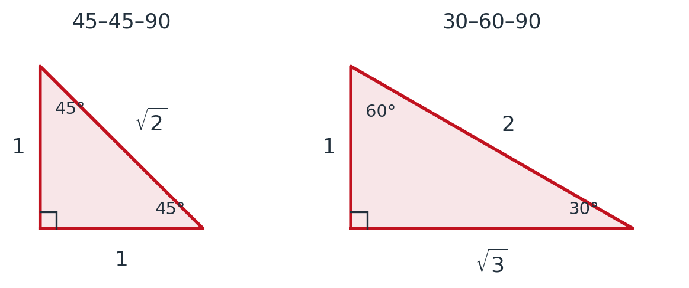

Day 1: Welcome to Calculus I
MTH 207 — Calculus I | Introduction
Today
- What calculus actually is — starting with two problems you can already make progress on
- How this course runs, and how to get help
- How to study for it, and what the research says about AI and solution videos
Who Am I?
Dr. Baggett — call me “Doctor B”.
- Office: 259E Cartwright
- E-mail: jbaggett@uwlax.edu
My job is to give you the resources to build a strong foundation in calculus. Your job is to use them early.
So What Is Calculus?
Here is my honest summary of this course:
Everything you already know still applies — factoring, fractions, exponents, logarithms, the unit circle. You will use all of it, constantly, and rusty algebra will cost you far more points than calculus ever will.
What is new is a single idea, and we will spend the next several weeks learning to handle it.
The One New Idea: The Limit
Every question in this course has the same shape:
- The quantity I want cannot be computed directly.
- But I can compute an approximation to it.
- And I can make that approximation as good as I like.
A limit is what you get by pushing that process as far as it goes.
Big Limit #1: How Fast, Right Now?
A ball is thrown straight up. Its height after \(t\) seconds is \[s(t) = -16t^2 + 32t + 48 = 16(-t^2+2t+3)\] feet.
The second form is easier here — the \(16\) pulls out of any difference.
The question. How fast is it moving at the instant \(t = 0.5\)?
The trouble. Speed is distance divided by time — but an instant has no duration. There is nothing to divide by.
\[x = 1:\quad \frac{s(1)-s(0.5)}{1-0.5} \;=\; \frac{64-60}{0.5} \;=\; 8\text{ ft/sec}\]
\[x = 0.6:\quad \frac{s(0.6)-s(0.5)}{0.6-0.5} \;=\; \frac{61.44-60}{0.1} \;=\; 14.4\text{ ft/sec}\]
| interval | |
|---|---|
| average velocity over it | |
| speedometer at t = 0.5 | 16 ft/sec |
Description: The height of a thrown ball plotted against time, with a poi...
The height of a thrown ball plotted against time, with a point P at t equals 0.5 and three secant lines drawn from P to points Q that get closer and closer to it. As Q approaches P the secant slopes rise toward the slope of the dashed tangent line, marked as the speedometer reading of 16 feet per second.
Do It Once with Letters
Instead of a new number every time, do the same computation with \(x\) left in.
First evaluate the two pieces: \(s(x) = 16(-x^2+2x+3)\), and \(s(0.5) = 16(-0.25+1+3) = 16(3.75) = 60\).
\[\frac{s(x)-s(0.5)}{x-0.5} \;=\; \frac{16(-x^2+2x+3) - 60}{x-0.5}\]
\[=\; \frac{-16x^2+32x+48-60}{x-0.5} \;=\; \frac{-16x^2+32x-12}{x-0.5}\]
\[=\; \frac{-4(4x^2-8x+3)}{x-0.5} \;=\; \frac{-4(2x-1)(2x-3)}{x-0.5}\]
\[=\; \frac{-8(x-0.5)(2x-3)}{x-0.5} \;=\; -8(2x-3) \;=\; 24-16x\]
Check it against the numbers you already found:
| \(x\) | \(24-16x\) | earlier |
|---|---|---|
| \(1\) | \(8\) | \(8\) |
| \(0.6\) | \(14.4\) | \(14.4\) |
| \(0.51\) | \(15.84\) | — |
| \(0.5\) | \(\mathbf{16}\) | the speedometer |
Big Limit #2: Area by Exhaustion
The question. What is the area of a circle of radius \(1\)?
The trouble. We know the area of a triangle. We know the area of a rectangle. A circle has no straight edges at all.
Archimedes' idea. Draw a polygon inside the circle. You can find its area. Then add sides.

\[\text{Square:}\quad \text{side} = \sqrt{2}, \qquad A = (\sqrt{2})^2 = 2\]
\[\text{Hexagon:}\quad \text{six equilateral triangles of side } 1\]
\[A = 6\cdot\frac{\sqrt{3}}{4}(1)^2 = \frac{3\sqrt{3}}{2} \approx 2.598\]
Both are under \(\pi\) — and the hexagon is closer.
| area of the polygon | |
|---|---|
| area of the circle | π = 3.14159265… |
| still missing |
Archimedes did this by hand and stopped at 96 sides.
Description: A circle with regular polygons inscribed in it at 3, 6, 12 a...
A circle with regular polygons inscribed in it at 3, 6, 12 and 96 sides. The polygon areas are 1.2990, 2.5981, 3.0000 and 3.1394, climbing toward the area of the circle, pi equals 3.14159.
The Same Trick, on Any Curve
Archimedes needed a circle. In Chapter 5 we do it with rectangles, and then it works under any curve.

Two Limits, One Course
The derivative
How fast, right now. Chapters 2 through 4 — rates of change, tangent lines, optimization.
The integral
How much, in total. Chapters 5 and 6 — area, accumulation, net change.
They look like opposite questions. In Chapter 5 we will prove they are inverses of each other, which is such a surprise that it is called the Fundamental Theorem of Calculus.
Whose Example Is It?
Most days you will do more of the work than I do. Every example is labelled so you know which kind it is before it starts.
Where Everything Lives
Canvas is the home for this course. Schedule, announcements, notes, and every link start there.
Stewart, Calculus: Early Transcendentals, 9th edition. Don't bring the book to class — there is a PDF of the chapters we use in Canvas.
MyOpenMath hosts the online homework. You reach it through Canvas; your score comes back to Canvas automatically.
How the Grade Works
Homework — 10%
51 sets in MyOpenMath, roughly one per class day. Every problem is worth 1 point; your grade is the percent of all points earned. Nothing dropped.
Quizzes — 20%
11 quizzes, almost always Tuesday, about 15 minutes. Lowest 2 dropped.
Midterms — 42%
Three, all on Tuesdays: Oct 6, Nov 3, Dec 1.
Final — 28%
Comprehensive, during the UWL final exam period.
Grade scale: A 92, AB 88, B 82, BC 78, C 70, D 60.
The Weekly Rhythm
We meet Monday through Thursday.
- There is a quiz most Tuesdays — 11 in all — covering the last three class days. The schedule in Canvas has every date.
- Homework is due at 11:59 pm, on the schedule below. Everything is in Canvas — you never have to work it out.
| assigned in class | due at 11:59 pm |
|---|---|
| Monday | Tuesday |
| Tuesday | Wednesday |
| Wednesday | Sunday |
| Thursday | Monday |
Getting Help
My office hours are posted in Canvas. If none of them work, e-mail me three times you are free and whether you want Zoom or in person.
The Murphy Learning Center (251 Murphy Library) offers free drop-in tutoring through Calculus II. It usually opens in Week 2.
How to Use the Textbook
Fifty minutes is not enough time to cover everything in a section, so I choose. What I skip is still yours to learn.
- Before class: skim the section. Ten seconds a page. You are looking for what the section is about, not understanding it.
- After class: read it properly. Find every definition and theorem, then read the example right after it.
- Then: do the homework.
The Experiment You Are About to Run on Yourself
Stuck on homework, you can ask an AI or find someone on YouTube working that exact problem. Researchers ran this as an experiment: about a thousand students worked math practice problems — one group with unrestricted GPT-4, one with a hints-only tutor, one with nothing. Then everyone sat an exam without any AI.
They scored about 17% worse — not worse than they hoped, worse than the students who never had the tool. During practice that same group looked like it was doing great.
Why It Feels Like Learning
Watching a clean solution is fluent. Nothing is confusing, so it feels like understanding. Being stuck is not fluent — it feels like failing, right up until it works.
In one study, students in classes that made them work learned more but felt like they learned less. The smooth version wins on feel and loses on results.
But the tools are not the problem. At Harvard, 194 physics students were randomly given either a well-run active class or an AI tutor — and the AI-tutored students learned more than twice as much, in less time.
Same kind of model that left those math students worse off. What differed: it gave one step at a time, never the whole solution, and made them try first.
So Use Them Like This
Attempt first. Ten real minutes on blank paper. Struggle is working while you are still generating and testing ideas; it is over when you have re-read the problem three times with no new idea. That moment — out of ideas, not out of patience — is when a hint is worth the most.
Then ask for the next step, not the answer. Paste this once:
Then close it and redo the problem from blank paper. If you cannot reproduce it, you recognised it — you did not learn it.
Brush Up on This Week
Four short review sets run alongside the regular homework this week and next: Review1 (algebra) due tomorrow, then Review2, Review3 (inverses, exponents, logs) and Review4 (trigonometry) on the next three class days.
They cover this:
Algebra
- Fractions: adding, subtracting, dividing
- Exponent rules and negative and fractional exponents
- Factoring; interval notation
- Logarithm laws and domains
Functions and trig
- Evaluating \(f(3+h)\) and \(f(x+h)\)
- Lines: \(y - y_0 = m(x - x_0)\)
- Unit circle, radians, graphs of sine and cosine
- \(|a| = -a\) when \(a < 0\)
Separately, a cumulative review set opens after each exam and is due on the review day before the next one. Start it early — it is built from the kind of problems the exam asks.